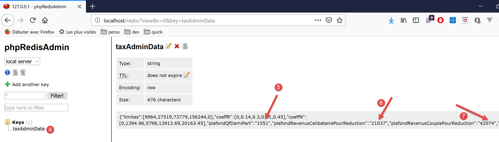
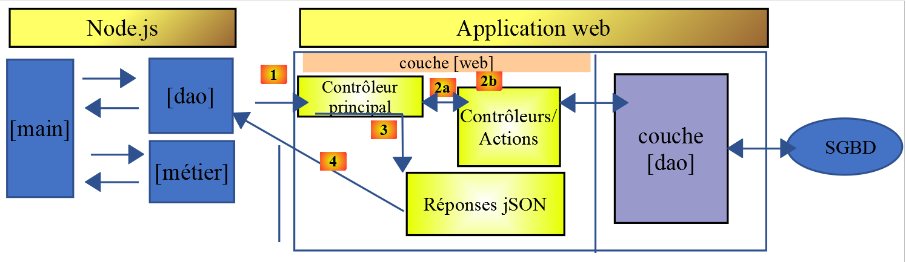
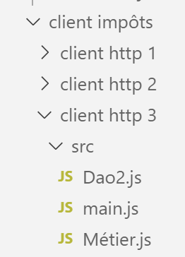
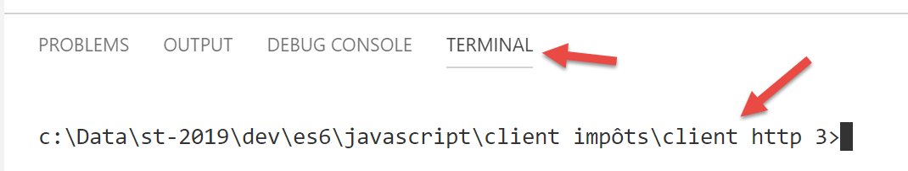
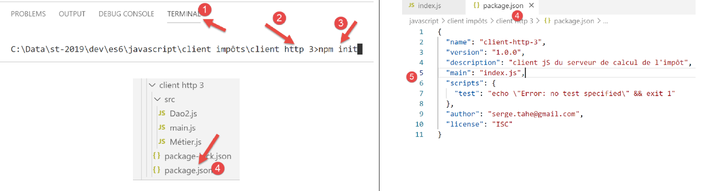
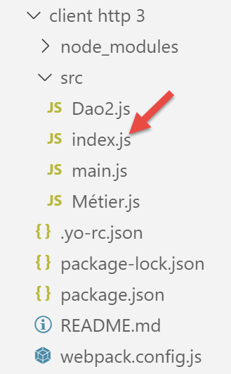
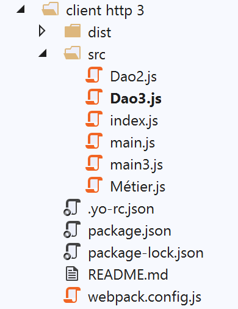

14. Javascript-clients van de belastingberekeningsdienst van het type HTTP
14.1. Introduction
We stellen hier voor om een client [node.js] te schrijven voor versie 14 van de belastingberekeningsdienst. De client/server-architectuur zal als volgt zijn:

We zullen twee versies van de client bekijken:
- versie 1 van de client heeft de volgende gelaagde structuur: [main, dao]:

- versie 2 van de client heeft de structuur [main, métier, dao]. De serverlaag [métier] wordt naar de client verplaatst:

14.2. Client HTTP 1

Zoals gezegd implementeert de client HTTP 1 de volgende client/server-architectuur:

We zullen het volgende implementeren:
- de laag [dao] in de vorm van een klasse;
- de laag [main] in de vorm van een script dat gebruikmaakt van deze klasse;
14.2.1. De laag [dao]
De laag [dao] wordt geïmplementeerd door de volgende klasse [Dao1.js]:
'use strict';
// imports
import qs from 'qs'
class Dao1 {
// constructor
constructor(axios) {
// axios-bibliotheek voor het uitvoeren van verzoeken HTTP
this.axios = axios;
// sessiecookie
this.sessionCookieName = "PHPSESSID";
this.sessionCookie = '';
}
// sessie starten
async initSession() {
// opties van de aanvraag HHTP [get /main.php?action=init-session&type=json]
const options = {
method: "GET",
// parameters van de URL
params: {
action: 'init-session',
type: 'json'
}
};
// uitvoering van de query HTTP
return await this.getRemoteData(options);
}
async authentifierUtilisateur(user, password) {
// opties van de aanvraag HHTP [post /main.php?action=authentifier-utilisateur]
const options = {
method: "POST",
headers: {
'Content-type': 'application/x-www-form-urlencoded',
},
// hoofdtekst van het POST
data: qs.stringify({
user: user,
password: password
}),
// parameters van de URL
params: {
action: 'authentifier-utilisateur'
}
};
// uitvoering van de aanvraag HTTP
return await this.getRemoteData(options);
}
// belastingberekening
async calculerImpot(marié, enfants, salaire) {
// opties van de aanvraag HHTP [post /main.php?action=calculer-impot]
const options = {
method: "POST",
headers: {
'Content-type': 'application/x-www-form-urlencoded',
},
// de hoofdtekst van de POST [marié, enfants, salaire]
data: qs.stringify({
marié: marié,
enfants: enfants,
salaire: salaire
}),
// parameters van de URL
params: {
action: 'calculer-impot'
}
};
// uitvoering van de query HTTP
const data = await this.getRemoteData(options);
// resultaat
return data;
}
// lijst met simulaties
async listeSimulations() {
// opties van de query HHTP [get /main.php?action=lister-simulations]
const options = {
method: "GET",
// parameters van de URL
params: {
action: 'lister-simulations'
},
};
// uitvoering van de aanvraag HTTP
const data = await this.getRemoteData(options);
// resultaat
return data;
}
// lijst met simulaties
async supprimerSimulation(index) {
// opties van de zoekopdracht HHTP [get /main.php?action=supprimer-simulation&numéro=index]
const options = {
method: "GET",
// parameters van de URL
params: {
action: 'supprimer-simulation',
numéro: index
},
};
// uitvoering van de query HTTP
const data = await this.getRemoteData(options);
// resultaat
return data;
}
async getRemoteData(options) {
// voor de sessiecookie
if (!options.headers) {
options.headers = {};
}
options.headers.Cookie = this.sessionCookie;
// uitvoering van de aanvraag HTTP
let response;
try {
// asynchrone aanvraag
response = await this.axios.request('main.php', options);
} catch (error) {
// de parameter [error] is een uitzondering – deze kan verschillende vormen aannemen
if (error.response) {
// het antwoord van de server staat in [error.response]
response = error.response;
} else {
// de fout wordt opnieuw gegenereerd
throw error;
}
}
// response is het volledige antwoord HTTP van de server (headers HTTP + het antwoord zelf)
// de sessiecookie wordt opgehaald, indien deze bestaat
const setCookie = response.headers['set-cookie'];
if (setCookie) {
// setCookie is een array
// we zoeken de sessiecookie in deze array
let trouvé = false;
let i = 0;
while (!trouvé && i < setCookie.length) {
// we zoeken naar de sessiecookie
const results = RegExp('^(' + this.sessionCookieName + '.+?);').exec(setCookie[i]);
if (results) {
// de sessiecookie wordt opgeslagen
// eslint-disable-next-line require-atomic-updates
this.sessionCookie = results[1];
// gevonden
trouvé = true;
} else {
// volgend element
i++;
}
}
}
// het antwoord van de server staat in [response.data]
return response.data;
}
}
// export van de klasse
export default Dao1;
- we passen hier toe wat we in de paragraaf ‘link’ hebben geleerd, waar we de bibliotheek [axios] hebben geïntroduceerd waarmee HTTP-verzoeken zowel onder [node.js] als in een browser kunnen worden uitgevoerd. We zullen in het bijzonder het script uit de paragraaf ‘link’ bekijken;
- regels 9-15: de constructor van de klasse. Deze heeft drie eigenschappen:
- [axios]: het object [axios] waarmee de verzoeken HTTP kunnen worden uitgevoerd. Dit wordt doorgegeven door de aanroepende code;
- [sessionCookieName]: afhankelijk van de server heeft de sessiecookie verschillende namen. Hier is dat [PHPSESSID];
- [sessionCookie]: de sessiecookie die door de server wordt verzonden en door de client wordt opgeslagen;
- regels 53-76: de asynchrone functie [calculerImpot] voert het verzoek [post /main.php?action=calculer-impot] uit door de parameters [marié, enfants, salaire] te verzenden. Deze functie retourneert de door de server verzonden tekenreeks jSON in de vorm van een JavaScript-object;
- regels 79-92: de asynchrone functie [listeSimulations] voert de verzoek [$status, $état, [‘réponse’=>$response]] uit. Deze zet de door de server verzonden tekenreeks jSON om in een JavaScript-object;
- regels 95-109: de asynchrone functie [supprimerSimulation] voert het verzoek [get /main.php?action=supprimer-simulation&numéro=index] uit. Deze functie zet de door de server verzonden tekenreeks jSON om in een JavaScript-object;
- regel 121: hier wordt de notatie [this.axios] gebruikt, omdat het object [axios] dat aan de constructor is doorgegeven, is opgeslagen in de eigenschap [this.axios];
- regel 161: de klasse [Dao1] wordt geëxporteerd zodat deze kan worden gebruikt;
14.2.2. Het script [main1.js]
Het script [main1.js] voert een reeks oproepen naar de server uit met behulp van de klasse [Dao1]:
- initialisatie van een sessie jSON;
- authenticatie met [admin, admin];
- vraagt drie belastingberekeningen aan;
- vraagt de lijst met simulaties op;
- verwijdert een ervan;
De code is als volgt:
// axios importeren
import axios from 'axios';
// de klasse Dao1 importeren
import Dao from './Dao1';
// asynchrone functie [main]
async function main() {
// configuratie van Axios
axios.defaults.timeout = 2000;
axios.defaults.baseURL = 'http://localhost/php7/scripts-web/impots/version-14';
// instantiëring van de laag [dao]
const dao = new Dao(axios);
// gebruik van de laag [dao]
try {
// sessie initialiseren
log("-----------init-session");
let response = await dao.initSession();
log(response);
// authenticatie
log("-----------authentifier-utilisateur");
response = await dao.authentifierUtilisateur("admin", "admin");
log(response);
// belastingberekeningen
log("-----------calculer-impot x 3");
response = await Promise.all([
dao.calculerImpot("oui", 2, 45000),
dao.calculerImpot("non", 2, 45000),
dao.calculerImpot("non", 1, 30000)
]);
log(response);
// lijst met simulaties
log("-----------liste-des-simulations");
response = await dao.listeSimulations();
log(response);
// een simulatie verwijderen
log("-----------suppression simulation n° 1");
response = await dao.supprimerSimulation(1);
log(response);
} catch (error) {
// fout wordt gelogd
console.log("erreur=", error.message);
}
}
// logboek jSON
function log(object) {
console.log(JSON.stringify(object, null, 2));
}
// uitvoering
main();
Opmerkingen
- regel 2: de bibliotheek [axios] wordt geïmporteerd;
- regel 4: de klasse [Dao] wordt geïmporteerd;
- regel 7: de functie [main] die met de server communiceert, is asynchroon;
- regels 9-10: standaardconfiguratie van de verzoeken HTTP die naar de server worden verzonden:
- regel 9: [timeout] van 2 seconden;
- regel 10: alle URL-verzoeken hebben als voorvoegsel de basis-URL van versie 14 van de belastingberekeningsserver;
- regel 12: de laag [Dao] is opgebouwd. Deze kan nu worden gebruikt;
- regels 46-48: de functie [log] heeft als doel de tekenreeks jSON van een JavaScript-object in een verfraaide vorm weer te geven: verticaal met een inspringing van twee spaties (3e parameter);
- regels 15-18: initialisatie van de sessie jSON;
- regels 19-22: authenticatie;
- regels 23-30: er worden drie belastingberekeningen tegelijk aangevraagd. Dankzij [await Promise.all] wordt de uitvoering geblokkeerd totdat alle drie de resultaten zijn verkregen;
- regels 31-34: lijst met simulaties;
- regels 35-38: verwijdering van een simulatie;
- regels 39-42: afhandeling van een eventuele uitzondering;
De resultaten van de uitvoering zijn als volgt:
[Running] C:\myprograms\laragon-lite\bin\nodejs\node-v10\node.exe -r esm "c:\Data\st-2019\dev\es6\javascript\client impôts\client http 1\main1.js"
"-----------init-session"
{
"action": "init-session",
"état": 700,
"réponse": "session démarrée avec type [json]"
}
"-----------authentifier-utilisateur"
{
"action": "authentifier-utilisateur",
"état": 200,
"réponse": "Authentification réussie [admin, admin]"
}
"-----------calculer-impot x 3"
[
{
"action": "calculer-impot",
"état": 300,
"réponse": {
"marié": "oui",
"enfants": "2",
"salaire": "45000",
"impôt": 502,
"surcôte": 0,
"décôte": 857,
"réduction": 126,
"taux": 0.14
}
},
{
"action": "calculer-impot",
"état": 300,
"réponse": {
"marié": "non",
"enfants": "2",
"salaire": "45000",
"impôt": 3250,
"surcôte": 370,
"décôte": 0,
"réduction": 0,
"taux": 0.3
}
},
{
"action": "calculer-impot",
"état": 300,
"réponse": {
"marié": "non",
"enfants": "1",
"salaire": "30000",
"impôt": 1687,
"surcôte": 0,
"décôte": 0,
"réduction": 0,
"taux": 0.14
}
}
]
"-----------liste-des-simulations"
{
"action": "lister-simulations",
"état": 500,
"réponse": [
{
"marié": "oui",
"enfants": "2",
"salaire": "45000",
"impôt": 502,
"surcôte": 0,
"décôte": 857,
"réduction": 126,
"taux": 0.14,
"arrayOfAttributes": null
},
{
"marié": "non",
"enfants": "2",
"salaire": "45000",
"impôt": 3250,
"surcôte": 370,
"décôte": 0,
"réduction": 0,
"taux": 0.3,
"arrayOfAttributes": null
},
{
"marié": "non",
"enfants": "1",
"salaire": "30000",
"impôt": 1687,
"surcôte": 0,
"décôte": 0,
"réduction": 0,
"taux": 0.14,
"arrayOfAttributes": null
}
]
}
"-----------suppression simulation n° 1"
{
"action": "supprimer-simulation",
"état": 600,
"réponse": [
{
"marié": "oui",
"enfants": "2",
"salaire": "45000",
"impôt": 502,
"surcôte": 0,
"décôte": 857,
"réduction": 126,
"taux": 0.14,
"arrayOfAttributes": null
},
{
"marié": "non",
"enfants": "1",
"salaire": "30000",
"impôt": 1687,
"surcôte": 0,
"décôte": 0,
"réduction": 0,
"taux": 0.14,
"arrayOfAttributes": null
}
]
}
[Done] exited with code=0 in 0.516 seconds
14.3. Client HTTP 2

De architectuur van de client HTTP2 is als volgt:

De laag [métier] is van de server naar de JavaScript-client verplaatst. In tegenstelling tot wat we in de cursus PHP7 hebben gedaan, hoeft de laag [main] hier niet via de laag [métier] te lopen om de laag [dao] te bereiken. We zullen deze twee lagen gebruiken als kenniscentra:
- laag [main] gaat via laag [dao] zodra deze gegevens nodig heeft die zich op de server bevinden;
- de laag [main] vraagt de laag [métier] om de belastingberekeningen uit te voeren;
- de laag [métier] is onafhankelijk van de laag [dao] en doet er nooit een beroep op;
14.3.1. De JavaScript-klasse [Métier]
De essentie van de klasse [Métier] in PHP is beschreven in het artikel (link). Het is een vrij complexe code die we hier herhalen, niet om deze uit te leggen, maar om deze naar JavaScript te kunnen vertalen:
<?php
// naamruimte
namespace Application;
class Metier implements InterfaceMetier {
// Dao-laag
private $dao;
// gegevens belastingdienst
private $taxAdminData;
//---------------------------------------------
// setter-laag [dao]
public function setDao(InterfaceDao $dao) {
$this->dao = $dao;
return $this;
}
public function __construct(InterfaceDao $dao) {
// er wordt een referentie opgeslagen op de laag [dao]
$this->dao = $dao;
// de gegevens voor de berekening van de belasting worden opgehaald
// de methode [getTaxAdminData] kan een uitzondering ExceptionImpots genereren
// deze wordt vervolgens doorgegeven naar de aanroepende code
$this->taxAdminData = $this->dao->getTaxAdminData();
}
// belastingberekening
// --------------------------------------------------------------------------
public function calculerImpot(string $marié, int $enfants, int $salaire): array {
// $marié: ja, nee
// $enfants: aantal kinderen
// $salaire: jaarsalaris
// $this->taxAdminData: gegevens van de belastingdienst
//
// er wordt gecontroleerd of de gegevens van de belastingdienst aanwezig zijn
if ($this->taxAdminData === NULL) {
$this->taxAdminData = $this->getTaxAdminData();
}
// berekening van de belasting met kinderen
$result1 = $this->calculerImpot2($marié, $enfants, $salaire);
$impot1 = $result1["impôt"];
// berekening van de belasting zonder kinderen
if ($enfants != 0) {
$result2 = $this->calculerImpot2($marié, 0, $salaire);
$impot2 = $result2["impôt"];
// toepassing van de maximering van de gezinsquotiënt
$plafonDemiPart = $this->taxAdminData->getPlafondQfDemiPart();
if ($enfants < 3) {
// $PLAFOND_QF_DEMI_PART euro voor de eerste twee kinderen
$impot2 = $impot2 - $enfants * $plafonDemiPart;
} else {
// $PLAFOND_QF_DEMI_PART euro voor de eerste twee kinderen, het dubbele voor de volgende kinderen
$impot2 = $impot2 - 2 * $plafonDemiPart - ($enfants - 2) * 2 * $plafonDemiPart;
}
} else {
$impot2 = $impot1;
$result2 = $result1;
}
// we nemen het hoogste belastingtarief
if ($impot1 > $impot2) {
$impot = $impot1;
$taux = $result1["taux"];
$surcôte = $result1["surcôte"];
} else {
$surcôte = $impot2 - $impot1 + $result2["surcôte"];
$impot = $impot2;
$taux = $result2["taux"];
}
// berekening van een eventuele korting
$décôte = $this->getDecôte($marié, $salaire, $impot);
$impot -= $décôte;
// berekening van een eventuele belastingvermindering
$réduction = $this->getRéduction($marié, $salaire, $enfants, $impot);
$impot -= $réduction;
// resultaat
return ["impôt" => floor($impot), "surcôte" => $surcôte, "décôte" => $décôte, "réduction" => $réduction, "taux" => $taux];
}
// --------------------------------------------------------------------------
private function calculerImpot2(string $marié, int $enfants, float $salaire): array {
// $marié: ja, nee
// $enfants: aantal kinderen
// $salaire: jaarsalaris
// $this->taxAdminData: gegevens van de belastingdienst
//
// aantal aandelen
$marié = strtolower($marié);
if ($marié === "oui") {
$nbParts = $enfants / 2 + 2;
} else {
$nbParts = $enfants / 2 + 1;
}
// 1 aandeel per kind vanaf het derde
if ($enfants >= 3) {
// een half extra aandeel voor elk kind vanaf het derde
$nbParts += 0.5 * ($enfants - 2);
}
// belastbaar inkomen
$revenuImposable = $this->getRevenuImposable($salaire);
// toeslag
$surcôte = floor($revenuImposable - 0.9 * $salaire);
// voor afrondingsproblemen
if ($surcôte < 0) {
$surcôte = 0;
}
// gezinsquotiënt
$quotient = $revenuImposable / $nbParts;
// berekening van de belasting
$limites = $this->taxAdminData->getLimites();
$coeffR = $this->taxAdminData->getCoeffR();
$coeffN = $this->taxAdminData->getCoeffN();
// wordt aan het einde van de limietentabel geplaatst om de daaropvolgende lus te beëindigen
$limites[count($limites) - 1] = $quotient;
// opzoeken van het belastingtarief
$i = 0;
while ($quotient > $limites[$i]) {
$i++;
}
// omdat $quotient aan het einde van de tabel $limites is geplaatst, wordt de voorgaande lus
// mag niet buiten de tabel $limites vallen
// nu kunnen we de belasting berekenen
$impôt = floor($revenuImposable * $coeffR[$i] - $nbParts * $coeffN[$i]);
// resultaat
return ["impôt" => $impôt, "surcôte" => $surcôte, "taux" => $coeffR[$i]];
}
// revenuImposable = jaarsalaris - aftrek
// de vrijstelling heeft een minimum en een maximum
private function getRevenuImposable(float $salaire): float {
// aftrek van 10% van het salaris
$abattement = 0.1 * $salaire;
// deze aftrek mag niet hoger zijn dan $this->taxAdminData->getAbattementDixPourCentMax()
if ($abattement > $this->taxAdminData->getAbattementDixPourCentMax()) {
$abattement = $this->taxAdminData->getAbattementDixPourcentMax();
}
// de aftrek mag niet lager zijn dan $this->taxAdminData->getAbattementDixPourcentMin()
if ($abattement < $this->taxAdminData->getAbattementDixPourcentMin()) {
$abattement = $this->taxAdminData->getAbattementDixPourcentMin();
}
// belastbaar inkomen
$revenuImposable = $salaire - $abattement;
// resultaat
return floor($revenuImposable);
}
// berekent een eventuele korting
private function getDecôte(string $marié, float $salaire, float $impots): float {
// in eerste instantie een korting van nul
$décôte = 0;
// maximaal belastingbedrag om de korting te krijgen
$plafondImpôtPourDécôte = $marié === "oui" ?
$this->taxAdminData->getPlafondImpotCouplePourDecote() :
$this->taxAdminData->getPlafondImpotCelibatairePourDecote();
if ($impots < $plafondImpôtPourDécôte) {
// maximaal kortingsbedrag
$plafondDécôte = $marié === "oui" ?
$this->taxAdminData->getPlafondDecoteCouple() :
$this->taxAdminData->getPlafondDecoteCelibataire();
// theoretische korting
$décôte = $plafondDécôte - 0.75 * $impots;
// de korting mag het belastingbedrag niet overschrijden
if ($décôte > $impots) {
$décôte = $impots;
}
// geen korting <0
if ($décôte < 0) {
$décôte = 0;
}
}
// resultaat
return ceil($décôte);
}
// berekent een eventuele korting
private function getRéduction(string $marié, float $salaire, int $enfants, float $impots): float {
// de inkomensgrens om in aanmerking te komen voor de korting van 20%
$plafondRevenuPourRéduction = $marié === "oui" ?
$this->taxAdminData->getPlafondRevenusCouplePourReduction() :
$this->taxAdminData->getPlafondRevenusCelibatairePourReduction();
$plafondRevenuPourRéduction += $enfants * $this->taxAdminData->getValeurReducDemiPart();
if ($enfants > 2) {
$plafondRevenuPourRéduction += ($enfants - 2) * $this->taxAdminData->getValeurReducDemiPart();
}
// belastbaar inkomen
$revenuImposable = $this->getRevenuImposable($salaire);
// korting
$réduction = 0;
if ($revenuImposable < $plafondRevenuPourRéduction) {
// korting van 20%
$réduction = 0.2 * $impots;
}
// resultaat
return ceil($réduction);
}
// berekening van de belastingen in batchmodus
public function executeBatchImpots(string $taxPayersFileName, string $resultsFileName, string $errorsFileName): void {
// uitzonderingen uit de laag [dao] worden doorgegeven
// de belastingplichtigengegevens worden opgehaald
$taxPayersData = $this->dao->getTaxPayersData($taxPayersFileName, $errorsFileName);
// resultatenoverzicht
$results = [];
// de resultaten worden geanalyseerd
foreach ($taxPayersData as $taxPayerData) {
// de belasting wordt berekend
$result = $this->calculerImpot(
$taxPayerData->getMarié(),
$taxPayerData->getEnfants(),
$taxPayerData->getSalaire());
// we vullen het aan [$taxPayerData]
$taxPayerData->setMontant($result["impôt"]);
$taxPayerData->setDécôte($result["décôte"]);
$taxPayerData->setSurCôte($result["surcôte"]);
$taxPayerData->setTaux($result["taux"]);
$taxPayerData->setRéduction($result["réduction"]);
// het resultaat wordt in de resultatenlijst geplaatst
$results [] = $taxPayerData;
}
// de resultaten worden opgeslagen
$this->dao->saveResults($resultsFileName, $results);
}
}
- regels 19-26: de constructor van de klasse PHP. Omdat we hebben gezegd dat we een laag [métier] bouwen die onafhankelijk is van de laag [dao], zullen we in JavaScript twee wijzigingen aanbrengen in deze constructor:
- hij ontvangt geen instantie van de laag [dao] (die heeft hij niet meer nodig);
- hij zal de fiscale gegevens van de administratie [taxAdminData] niet opvragen bij de laag [dao]: het is de aanroepende code die deze gegevens naar de constructor zal doorgeven;
- regels 197-122: we zullen de methode [executeBatchImpots] niet implementeren, die uiteindelijk bedoeld was om simulatieresultaten in een tekstbestand op te slaan. We willen code die zowel onder [node.js] als in een browser werkt. Het is echter niet mogelijk om gegevens op te slaan in het bestandssysteem van de machine waarop de clientbrowser draait;
Gezien deze beperkingen is de code van de JavaScript-klasse [Métier] als volgt:
'use strict';
// klasse Métier
class Métier {
// constructor
constructor(taxAdmindata) {
// this.taxAdminData: gegevens van de belastingdienst
this.taxAdminData = taxAdmindata;
}
// belastingberekening
// --------------------------------------------------------------------------
calculerImpot(marié, enfants, salaire) {
// gehuwd: ja, nee
// kinderen: aantal kinderen
// salaris: jaarsalaris
// this.taxAdminData: gegevens van de belastingdienst
//
// belastingberekening met kinderen
const result1 = this.calculerImpot2(marié, enfants, salaire);
const impot1 = result1["impôt"];
// belastingberekening zonder kinderen
let result2, impot2, plafondDemiPart;
if (enfants !== 0) {
result2 = this.calculerImpot2(marié, 0, salaire);
impot2 = result2["impôt"];
// toepassing van de maximering van de gezinsquotiënt
plafondDemiPart = this.taxAdminData.plafondQfDemiPart;
if (enfants < 3) {
// PLAFOND_QF_DEMI_PART euro voor de eerste twee kinderen
impot2 = impot2 - enfants * plafondDemiPart;
} else {
// PLAFOND_QF_DEMI_PART euro voor de eerste twee kinderen, het dubbele voor de volgende
impot2 = impot2 - 2 * plafondDemiPart - (enfants - 2) * 2 * plafondDemiPart;
}
} else {
// geen herberekening van de belasting
impot2 = impot1;
result2 = result1;
}
// de hoogste belasting uit [impot1, impot2] wordt genomen
let impot, taux, surcôte;
if (impot1 > impot2) {
impot = impot1;
taux = result1["taux"];
surcôte = result1["surcôte"];
} else {
surcôte = impot2 - impot1 + result2["surcôte"];
impot = impot2;
taux = result2["taux"];
}
// berekening van een eventuele korting
const décôte = this.getDecôte(marié, impot);
impot -= décôte;
// berekening van een eventuele belastingvermindering
const réduction = this.getRéduction(marié, salaire, enfants, impot);
impot -= réduction;
// resultaat
return {
"impôt": Math.floor(impot), "surcôte": surcôte, "décôte": décôte, "réduction": réduction,
"taux": taux
};
}
// --------------------------------------------------------------------------
calculerImpot2(marié, enfants, salaire) {
// gehuwd: ja, nee
// kinderen: aantal kinderen
// salaris: jaarsalaris
// this->taxAdminData: gegevens van de belastingdienst
//
// aantal aandelen
marié = marié.toLowerCase();
let nbParts;
if (marié === "oui") {
nbParts = enfants / 2 + 2;
} else {
nbParts = enfants / 2 + 1;
}
// 1 aandeel per kind vanaf het derde
if (enfants >= 3) {
// een half extra aandeel voor elk kind vanaf het derde
nbParts += 0.5 * (enfants - 2);
}
// belastbaar inkomen
const revenuImposable = this.getRevenuImposable(salaire);
// toeslag
let surcôte = Math.floor(revenuImposable - 0.9 * salaire);
// voor afrondingsproblemen
if (surcôte < 0) {
surcôte = 0;
}
// gezinsquotiënt
const quotient = revenuImposable / nbParts;
// belastingberekening
const limites = this.taxAdminData.limites;
const coeffR = this.taxAdminData.coeffR;
const coeffN = this.taxAdminData.coeffN;
// wordt aan het einde van de limiettabel geplaatst om de daaropvolgende lus te beëindigen
limites[limites.length - 1] = quotient;
// opzoeken van het belastingtarief
let i = 0;
while (quotient > limites[i]) {
i++;
}
// omdat het gezinsquotiënt aan het einde van de limiettabel is geplaatst, wordt de voorgaande lus
// kan de limiettabel niet overschrijden
// nu kan de belasting worden berekend
const impôt = Math.floor(revenuImposable * coeffR[i] - nbParts * coeffN[i]);
// resultaat
return { "impôt": impôt, "surcôte": surcôte, "taux": coeffR[i] };
}
// revenuImposable = jaarsalaris - vrijstelling
// de vrijstelling heeft een minimum en een maximum
getRevenuImposable(salaire) {
// aftrek van 10% van het salaris
let abattement = 0.1 * salaire;
// deze aftrek mag niet hoger zijn dan taxAdminData.getAbattementDixPourCentMax()
if (abattement > this.taxAdminData.abattementDixPourCentMax) {
abattement = this.taxAdminData.abattementDixPourcentMax;
}
// de korting mag niet lager zijn dan taxAdminData.getAbattementDixPourcentMin()
if (abattement < this.taxAdminData.abattementDixPourcentMin) {
abattement = this.taxAdminData.abattementDixPourcentMin;
}
// belastbaar inkomen
const revenuImposable = salaire - abattement;
// resultaat
return Math.floor(revenuImposable);
}
// berekent een eventuele korting
getDecôte(marié, impots) {
// in eerste instantie een korting van nul
let décôte = 0;
// maximaal belastingbedrag om de korting te krijgen
let plafondImpôtPourDécôte = marié === "oui" ?
this.taxAdminData.plafondImpotCouplePourDecote :
this.taxAdminData.plafondImpotCelibatairePourDecote;
let plafondDécôte;
if (impots < plafondImpôtPourDécôte) {
// maximaal kortingsbedrag
plafondDécôte = marié === "oui" ?
this.taxAdminData.plafondDecoteCouple :
this.taxAdminData.plafondDecoteCelibataire;
// theoretische korting
décôte = plafondDécôte - 0.75 * impots;
// de korting mag het belastingbedrag niet overschrijden
if (décôte > impots) {
décôte = impots;
}
// geen korting <0
if (décôte < 0) {
décôte = 0;
}
}
// resultaat
return Math.ceil(décôte);
}
// berekent een eventuele korting
getRéduction(marié, salaire, enfants, impots) {
// de inkomensgrens om in aanmerking te komen voor de korting van 20%
let plafondRevenuPourRéduction = marié === "oui" ?
this.taxAdminData.plafondRevenusCouplePourReduction :
this.taxAdminData.plafondRevenusCelibatairePourReduction;
plafondRevenuPourRéduction += enfants * this.taxAdminData.valeurReducDemiPart;
if (enfants > 2) {
plafondRevenuPourRéduction += (enfants - 2) * this.taxAdminData.valeurReducDemiPart;
}
// belastbaar inkomen
const revenuImposable = this.getRevenuImposable(salaire);
// korting
let réduction = 0;
if (revenuImposable < plafondRevenuPourRéduction) {
// korting van 20%
réduction = 0.2 * impots;
}
// resultaat
return Math.ceil(réduction);
}
}
// klasse exporteren
export default Métier;
- de JavaScript-code volgt nauwgezet de code PHP;
- de klasse [Métier] wordt geëxporteerd, regel 187;
14.3.2. De JavaScript-klasse [Dao2]

De klasse [Dao2] implementeert de laag [dao] van de bovenstaande JavaScript-client als volgt:
'use strict';
// imports
import qs from 'qs'
class Dao2 {
// constructor
constructor(axios) {
this.axios = axios;
// sessiecookie
this.sessionCookieName = "PHPSESSID";
this.sessionCookie = '';
}
// sessie initialiseren
async initSession() {
// verzoekopties HHTP [get /main.php?action=init-session&type=json]
const options = {
method: "GET",
// parameters van de URL
params: {
action: 'init-session',
type: 'json'
}
};
// uitvoering van de query HTTP
return await this.getRemoteData(options);
}
async authentifierUtilisateur(user, password) {
// opties van de aanvraag HHTP [post /main.php?action=authentifier-utilisateur]
const options = {
method: "POST",
headers: {
'Content-type': 'application/x-www-form-urlencoded',
},
// hoofdtekst van het POST
data: qs.stringify({
user: user,
password: password
}),
// parameters van de URL
params: {
action: 'authentifier-utilisateur'
}
};
// uitvoering van de query HTTP
return await this.getRemoteData(options);
}
async getAdminData() {
// opties van de query HHTP [get /main.php?action=get-admindata]
const options = {
method: "GET",
// parameters van de URL
params: {
action: 'get-admindata'
}
};
// uitvoering van de query HTTP
const data = await this.getRemoteData(options);
// resultaat
return data;
}
async getRemoteData(options) {
// voor de sessiecookie
if (!options.headers) {
options.headers = {};
}
options.headers.Cookie = this.sessionCookie;
// uitvoering van de aanvraag HTTP
let response;
try {
// asynchrone aanvraag
response = await this.axios.request('main.php', options);
} catch (error) {
// de parameter [error] is een uitzondering – deze kan verschillende vormen aannemen
if (error.response) {
// het antwoord van de server staat in [error.response]
response = error.response;
} else {
// de fout wordt opnieuw gegenereerd
throw error;
}
}
// response is het volledige antwoord HTTP van de server (headers HTTP + het antwoord zelf)
// de sessiecookie wordt opgehaald, indien deze bestaat
const setCookie = response.headers['set-cookie'];
if (setCookie) {
// setCookie is een array
// we zoeken de sessiecookie in deze array
let trouvé = false;
let i = 0;
while (!trouvé && i < setCookie.length) {
// we zoeken naar de sessiecookie
const results = RegExp('^(' + this.sessionCookieName + '.+?);').exec(setCookie[i]);
if (results) {
// de sessiecookie wordt opgeslagen
// eslint-disable-next-line require-atomic-updates
this.sessionCookie = results[1];
// gevonden
trouvé = true;
} else {
// volgend element
i++;
}
}
}
// het antwoord van de server staat in [response.data]
return response.data;
}
}
// export van de klasse
export default Dao2;
Opmerkingen
- De klasse [Dao2] implementeert slechts drie van de mogelijke verzoeken aan de belastingberekeningsserver:
- [init-session] (regels 17-29): om de sessie jSON te initialiseren;
- [authentifier-utilisateur] (regels 31-50): om in te loggen;
- [get-admindata] (regels 52-65): om de gegevens van de belastingdienst op te halen waarmee de belastingberekeningen aan de clientzijde kunnen worden uitgevoerd;
- regels 52-65: we voegen een nieuwe actie [get-admindata] naar de server toe. Deze actie was tot nu toe nog niet geïmplementeerd. Dat doen we nu.
14.3.3. Wijziging van de server voor belastingberekening
De server voor de belastingberekening moet een nieuwe actie implementeren. We gaan dit doen in versie 14 van de server. De te implementeren actie heeft de volgende kenmerken:
- de actie wordt aangevraagd door een bewerking [get /main.php?action=get-admindata];
- de actie retourneert de string jSON van een object dat de gegevens van de belastingdienst bevat;
We gaan bekijken hoe we een actie aan onze server kunnen toevoegen.
De wijziging vindt plaats in NetBeans:

In [2] passen we het bestand [config.json] aan om de nieuwe actie toe te voegen:
{
"databaseFilename": "Config/database.json",
"corsAllowed": true,
"rootDirectory": "C:/myprograms/laragon-lite/www/php7/scripts-web/impots/version-14",
"relativeDependencies": [
"/Entities/BaseEntity.php",
"/Entities/Simulation.php",
"/Entities/Database.php",
"/Entities/TaxAdminData.php",
"/Entities/ExceptionImpots.php",
"/Utilities/Logger.php",
"/Utilities/SendAdminMail.php",
"/Model/InterfaceServerDao.php",
"/Model/ServerDao.php",
"/Model/ServerDaoWithSession.php",
"/Model/InterfaceServerMetier.php",
"/Model/ServerMetier.php",
"/Responses/InterfaceResponse.php",
"/Responses/ParentResponse.php",
"/Responses/JsonResponse.php",
"/Responses/XmlResponse.php",
"/Responses/HtmlResponse.php",
"/Controllers/InterfaceController.php",
"/Controllers/InitSessionController.php",
"/Controllers/ListerSimulationsController.php",
"/Controllers/AuthentifierUtilisateurController.php",
"/Controllers/CalculerImpotController.php",
"/Controllers/SupprimerSimulationController.php",
"/Controllers/FinSessionController.php",
"/Controllers/AfficherCalculImpotController.php",
"/Controllers/AdminDataController.php"
],
"absoluteDependencies": [
"C:/myprograms/laragon-lite/www/vendor/autoload.php",
"C:/myprograms/laragon-lite/www/vendor/predis/predis/autoload.php"
],
"users": [
{
"login": "admin",
"passwd": "admin"
}
],
"adminMail": {
"smtp-server": "localhost",
"smtp-port": "25",
"from": "guest@localhost",
"to": "guest@localhost",
"subject": "plantage du serveur de calcul d'impôts",
"tls": "FALSE",
"attachments": []
},
"logsFilename": "Logs/logs.txt",
"actions":
{
"init-session": "\\InitSessionController",
"authentifier-utilisateur": "\\AuthentifierUtilisateurController",
"calculer-impot": "\\CalculerImpotController",
"lister-simulations": "\\ListerSimulationsController",
"supprimer-simulation": "\\SupprimerSimulationController",
"fin-session": "\\FinSessionController",
"afficher-calcul-impot": "\\AfficherCalculImpotController",
"get-admindata": "\\AdminDataController"
},
"types": {
"json": "\\JsonResponse",
"html": "\\HtmlResponse",
"xml": "\\XmlResponse"
},
"vues": {
"vue-authentification.php": [700, 221, 400],
"vue-calcul-impot.php": [200, 300, 341, 350, 800],
"vue-liste-simulations.php": [500, 600]
},
"vue-erreurs": "vue-erreurs.php"
}
De wijziging bestaat uit:
- regel 67: de actie [get-admindata] toevoegen en deze koppelen aan een controller;
- regel 36: deze controller opgeven in de lijst met klassen die door de applicatie PHP moeten worden geladen;
De volgende stap is het implementeren van de controller [AdminDataController] [3]:
<?php
namespace Application;
// Symfony-afhankelijkheden
use \Symfony\Component\HttpFoundation\Response;
use \Symfony\Component\HttpFoundation\Request;
use \Symfony\Component\HttpFoundation\Session\Session;
// alias van de laag [dao]
use \Application\ServerDaoWithSession as ServerDaoWithRedis;
class AdminDataController implements InterfaceController {
// $config is de configuratie van de applicatie
// verwerking van een Request-verzoek
// maakt gebruik van de sessie en kan deze wijzigen
// $infos zijn aanvullende gegevens die specifiek zijn voor elke controller
// geeft een array terug: [$statusCode, $état, $content, $headers]
public function execute(
array $config,
Request $request,
Session $session,
array $infos = NULL): array {
// er moet slechts één parameter zijn: GET
$method = strtolower($request->getMethod());
$erreur = $method !== "get" || $request->query->count() != 1;
if ($erreur) {
// de fout wordt genoteerd
$message = "il faut utiliser la méthode [get] avec l'unique paramètre [action] dans l'URL";
$état = 1001;
// stuur het resultaat terug naar de hoofdcontroller
return [Response::HTTP_BAD_REQUEST, $état, ["réponse" => $message], []];
}
// we kunnen aan de slag
// Redis
\Predis\Autoloader::register();
try {
// client [predis]
$redis = new \Predis\Client();
// we maken verbinding met de server om te zien of deze beschikbaar is
$redis->connect();
} catch (\Predis\Connection\ConnectionException $ex) {
// dat is misgegaan
// resultaat met fout teruggestuurd naar de hoofdcontroller
$état = 1050;
return [Response::HTTP_INTERNAL_SERVER_ERROR, $état,
["réponse" => "[redis], " . utf8_encode($ex->getMessage())], []];
}
// gegevens ophalen bij de belastingdienst
// we zoeken eerst in de cache [redis]
if (!$redis->get("taxAdminData")) {
try {
// de belastinggegevens worden uit de database opgehaald
$dao = new ServerDaoWithRedis($config["databaseFilename"], NULL);
// taxAdminData
$taxAdminData = $dao->getTaxAdminData();
// de opgehaalde gegevens worden in Redis opgeslagen
$redis->set("taxAdminData", $taxAdminData);
} catch (\RuntimeException $ex) {
// er is iets misgegaan
// het resultaat wordt met een foutmelding teruggestuurd naar de hoofdcontroller
$état = 1041;
return [Response::HTTP_INTERNAL_SERVER_ERROR, $état,
["réponse" => utf8_encode($ex->getMessage())], []];
}
} else {
// de fiscale gegevens worden opgehaald uit het geheugen [redis] met bereik [application]
$arrayOfAttributes = \json_decode($redis->get("taxAdminData"), true);
// er wordt een object [TaxAdminData] geïnstantieerd op basis van de vorige attributentabel
$taxAdminData = (new TaxAdminData())->setFromArrayOfAttributes($arrayOfAttributes);
}
// het resultaat wordt teruggestuurd naar de hoofdcontroller
$état = 1000;
return [Response::HTTP_OK, $état, ["réponse" => $taxAdminData], []];
}
}
Opmerkingen
- regel 12: net als de andere controllers van de server implementeert [AdminDataController] de interface [InterfaceController], die bestaat uit de methode [execute] op de regels 19-79;
- regel 78: net als bij de andere controllers van de server retourneert de methode [AdminDataController.execute] een array [$status, $état, [‘réponse’=>$response]] met:
- [$status]: de statuscode van het antwoord op HTTP;
- [$état]: een interne applicatiecode die de toestand weergeeft waarin de server zich bevindt na uitvoering van het verzoek van de client;
- [$response]: een array die het naar de client te verzenden antwoord bevat. Deze array wordt hier later omgezet in de tekenreeks jSON;
- regels 25-34: er wordt gecontroleerd of de actie [get-admindata] van de klant syntactisch correct is;
- regels 37-74: er wordt een object [TaxAdminData] opgehaald dat ofwel:
- regels 56-59: in de database als het niet is gevonden in de cache [redis];
- regels 70-73: uit de cache [redis];
Deze code is overgenomen van de controller [CalculerImpotController] die in het artikel (link) wordt uitgelegd. Deze controller moest namelijk ook het object [TaxAdminData] ophalen, waarin de gegevens van de belastingdienst zijn ingekapseld.
Tijdens het testen van de JavaScript-client leverde de vorm jSON van [TaxAdminData] problemen op wanneer dit object werd aangetroffen in de cache [redis]. Om dit te begrijpen, kijken we hoe dit object in [redis] is opgeslagen:


- In [5-7] zien we dat numerieke waarden zijn opgeslagen als tekenreeksen. PHP kon hiermee overweg, omdat de operator + bij berekeningen tussen getallen en tekenreeksen impliciet een typeconversie van de tekenreeks naar een getal veroorzaakt. Maar JavaScript doet het tegenovergestelde: de operator + bij berekeningen tussen getallen en tekenreeksen zorgt impliciet voor een typeconversie van het getal naar een tekenreeks. De berekeningen van de JavaScript-klasse [Métier] zijn dan onjuist;
Om dit probleem op te lossen, passen we de methode [TaxAdminData.setFromArrayOfAttributes] aan die op regel 71 van de controller wordt gebruikt om een object [TaxAdminData] te instantiëren (zie artikel) aan te maken op basis van de tekenreeks jSON die in de cache [redis] is gevonden:
<?php
namespace Application;
class TaxAdminData extends BaseEntity {
// belastingtrappen
protected $limites;
protected $coeffR;
protected $coeffN;
// constanten voor de belastingberekening
protected $plafondQfDemiPart;
protected $plafondRevenusCelibatairePourReduction;
protected $plafondRevenusCouplePourReduction;
protected $valeurReducDemiPart;
protected $plafondDecoteCelibataire;
protected $plafondDecoteCouple;
protected $plafondImpotCouplePourDecote;
protected $plafondImpotCelibatairePourDecote;
protected $abattementDixPourcentMax;
protected $abattementDixPourcentMin;
// initialisatie
public function setFromJsonFile(string $taxAdminDataFilename) {
// bovenliggend
parent::setFromJsonFile($taxAdminDataFilename);
// de waarden van de attributen worden gecontroleerd
$this->checkAttributes();
// het object wordt teruggegeven
return $this;
}
protected function check($value): \stdClass {
// $value is een array met string-elementen of een enkel element
if (!\is_array($value)) {
$tableau = [$value];
} else {
$tableau = $value;
}
// de array van strings wordt omgezet in een array van reële getallen
$newTableau = [];
$result = new \stdClass();
// de elementen van de array moeten positieve of nul decimale getallen zijn
$modèle = '/^\s*([+]?)\s*(\d+\.\d*|\.\d+|\d+)\s*$/';
for ($i = 0; $i < count($tableau); $i ++) {
if (preg_match($modèle, $tableau[$i])) {
// we plaatsen de float in newTableau
$newTableau[] = (float) $tableau[$i];
} else {
// de fout wordt genoteerd
$result->erreur = TRUE;
// we stoppen
return $result;
}
}
// het resultaat wordt weergegeven
$result->erreur = FALSE;
if (!\is_array($value)) {
// één enkele waarde
$result->value = $newTableau[0];
} else {
// een lijst met waarden
$result->value = $newTableau;
}
return $result;
}
// initialisatie met een array van attributen
public function setFromArrayOfAttributes(array $arrayOfAttributes) {
// bovenliggend
parent::setFromArrayOfAttributes($arrayOfAttributes);
// de waarden van de attributen worden gecontroleerd
$this->checkAttributes();
// het object wordt teruggegeven
return $this;
}
// controle van de waarden van de attributen
protected function checkAttributes() {
// er wordt gecontroleerd of de waarden van de attributen reële getallen >=0 zijn
foreach ($this as $key => $value) {
if (is_string($value)) {
// $value moet een reëel getal >=0 zijn of een array van reële getallen >=0
$result = $this->check($value);
// fout?
if ($result->erreur) {
// er wordt een uitzondering gegenereerd
throw new ExceptionImpots("La valeur de l'attribut [$key] est invalide");
} else {
// de waarde wordt genoteerd
$this->$key = $result->value;
}
}
}
// het object wordt teruggegeven
return $this;
}
// getters en setters
...
}
Opmerkingen
- regel 5: de klasse [TaxAdminData] is een uitbreiding van de klasse [BaseEntity], die al de methode [setFromArrayOfAttributes] bevat. Aangezien deze methode niet geschikt is, herdefiniëren we deze op de regels 67-75;
- regel 70: de methode [setFromArrayOfAttributes] van de bovenliggende klasse wordt eerst gebruikt om de attributen van de klasse te initialiseren;
- regel 72: de methode [checkAttributes] controleert of de bijbehorende waarden daadwerkelijk getallen zijn. Als het tekenreeksen zijn, worden deze omgezet in getallen;
- regel 74: het gerenderde object [$this] is dan een object met attributen met numerieke waarden;
- regels 78-93: de methode [checkAttributes] controleert of de waarden die aan de attributen van het object zijn gekoppeld, inderdaad numeriek zijn;
- regel 80: de lijst met attributen wordt doorlopen;
- regel 81: als de waarde van een attribuut van het type [string] is;
- regel 83: dan wordt gecontroleerd of deze tekenreeks een getal vertegenwoordigt;
- regel 90: als dat het geval is, wordt de tekenreeks omgezet in een getal en toegewezen aan het geteste attribuut;
- regels 85-86: als dat niet het geval is, wordt er een uitzondering gegenereerd;
- regels 32-65: de functie [check] doet iets meer dan nodig is. Ze verwerkt zowel tabellen als afzonderlijke waarden. Maar hier wordt ze alleen aangeroepen om een waarde van het type [string] te controleren. Ze retourneert een object met de eigenschappen [erreur, value], waarbij:
- [erreur] een booleaanse waarde is die aangeeft of er al dan niet een fout is;
- [value] de parameter [value] van regel 32 is, omgezet in een getal of een array van getallen, al naar gelang het geval;
De klasse [BaseEntity], die een attribuut met de naam [arrayOfAttributes] kon hebben, wordt aangepast zodat dit attribuut niet langer aanwezig is: het vervuilt namelijk de tekenreeks jSON van [TaxAdminData]. De klasse wordt als volgt herschreven:
<?php
namespace Application;
class BaseEntity {
// initialisatie vanuit een bestand JSON
public function setFromJsonFile(string $jsonFilename) {
// de inhoud van het belastinggegevensbestand wordt opgehaald
$fileContents = \file_get_contents($jsonFilename);
$erreur = FALSE;
// fout?
if (!$fileContents) {
// de fout wordt genoteerd
$erreur = TRUE;
$message = "Le fichier des données [$jsonFilename] n'existe pas";
}
if (!$erreur) {
// de code JSON uit het configuratiebestand wordt opgehaald in een associatieve array
$arrayOfAttributes = \json_decode($fileContents, true);
// fout?
if ($arrayOfAttributes === FALSE) {
// de fout wordt genoteerd
$erreur = TRUE;
$message = "Le fichier de données JSON [$jsonFilename] n'a pu être exploité correctement";
}
}
// fout?
if ($erreur) {
// er wordt een uitzondering gegenereerd
throw new ExceptionImpots($message);
}
// initialisatie van de attributen van de klasse
foreach ($arrayOfAttributes as $key => $value) {
$this->$key = $value;
}
// er wordt gecontroleerd of alle attributen aanwezig zijn
$this->checkForAllAttributes($arrayOfAttributes);
// het object wordt teruggegeven
return $this;
}
public function checkForAllAttributes($arrayOfAttributes) {
// er wordt gecontroleerd of alle sleutels zijn geïnitialiseerd
foreach (\array_keys($arrayOfAttributes) as $key) {
if (!isset($this->$key)) {
throw new ExceptionImpots("L'attribut [$key] de la classe "
. get_class($this) . " n'a pas été initialisé");
}
}
}
public function setFromArrayOfAttributes(array $arrayOfAttributes) {
// bepaalde attributen van de klasse worden geïnitialiseerd (niet noodzakelijkerwijs alle)
foreach ($arrayOfAttributes as $key => $value) {
$this->$key = $value;
}
// het object wordt teruggegeven
return $this;
}
// toString
public function __toString() {
// attributen van het object
$arrayOfAttributes = \get_object_vars($this);
// de tekenreeks jSON van het object
return \json_encode($arrayOfAttributes, JSON_UNESCAPED_UNICODE);
}
}
Opmerkingen
- regel 20: het attribuut [$this→arrayOfAttributes] is omgezet in een variabele die voortaan moet worden doorgegeven aan de methode [checkForAllAttributes], regel 38, die voorheen op het attribuut [$this→arrayOfAttributes] werkte;
Vanwege deze wijziging in [BaseEntity] moet de klasse [Database] eveneens licht worden aangepast:
<?php
namespace Application;
class Database extends BaseEntity {
// attributen
protected $dsn;
protected $id;
protected $pwd;
protected $tableTranches;
protected $colLimites;
protected $colCoeffR;
protected $colCoeffN;
protected $tableConstantes;
protected $colPlafondQfDemiPart;
protected $colPlafondRevenusCelibatairePourReduction;
protected $colPlafondRevenusCouplePourReduction;
protected $colValeurReducDemiPart;
protected $colPlafondDecoteCelibataire;
protected $colPlafondDecoteCouple;
protected $colPlafondImpotCelibatairePourDecote;
protected $colPlafondImpotCouplePourDecote;
protected $colAbattementDixPourcentMax;
protected $colAbattementDixPourcentMin;
// setter
// initialisatie
public function setFromJsonFile(string $jsonFilename) {
// ouder
parent::setFromJsonFile($jsonFilename);
// het object wordt teruggegeven
return $this;
}
// getters en setters
...
}
Opmerkingen
- in de oorspronkelijke code werd na regel 30 de methode [parent::checkForAllAttributes] aangeroepen. Dit hoeft niet meer te gebeuren, aangezien dit nu automatisch wordt afgehandeld door de methode [parent::setFromJsonFile($jsonFilename)];
14.3.4. Tests van de servermethode [Postman]
[Postman] werd besproken in het artikel (link).
We gebruiken de volgende Postman-tests:


Het resultaat jSON van deze laatste verzoek is als volgt:

- In [5-8] valt op dat de attributen van de tekenreeks jSON inderdaad numerieke waarden hebben (en geen tekenreeksen). Dankzij dit resultaat kan de JavaScript-klasse [Métier] normaal worden uitgevoerd;
14.3.5. Het hoofdscript [main]

Het hoofdscript [main] van de JavaScript-client is als volgt:
// imports
import axios from 'axios';
// imports
import Dao from './Dao2';
import Métier from './Métier';
// asynchrone functie [main]
async function main() {
// axios-configuratie
axios.defaults.timeout = 2000;
axios.defaults.baseURL = 'http://localhost/php7/scripts-web/impots/version-14';
// instantiëring van de laag [dao]
const dao = new Dao(axios);
// verzoeken HTTP
let taxAdminData;
try {
// sessie initialiseren
log("-----------init-session");
let response = await dao.initSession();
log(response);
// authenticatie
log("-----------authentifier-utilisateur");
response = await dao.authentifierUtilisateur("admin", "admin");
log(response);
// belastinggegevens
log("-----------get-admindata");
response = await dao.getAdminData();
log(response);
taxAdminData = response.réponse;
} catch (error) {
// fout wordt gelogd
console.log("erreur=", error.message);
// einde
return;
}
// instantiëring van de laag [métier]
const métier = new Métier(taxAdminData);
// belastingberekeningen
log("-----------calculer-impot x 3");
const simulations = [];
simulations.push(métier.calculerImpot("oui", 2, 45000));
simulations.push(métier.calculerImpot("non", 2, 45000));
simulations.push(métier.calculerImpot("non", 1, 30000));
// lijst met simulaties
log("-----------liste-des-simulations");
log(simulations);
// verwijdering van een simulatie
log("-----------suppression simulation n° 1");
simulations.splice(1, 1);
log(simulations);
}
// logboek jSON
function log(object) {
console.log(JSON.stringify(object, null, 2));
}
// uitvoering
main();
Opmerkingen
- regels 5-6: imports van de klassen [Dao] en [Métier];
- regel 9: de asynchrone functie [main] die de communicatie met de server regelt via de klasse [Dao] en de klasse [Métier] vraagt om de belastingberekeningen uit te voeren;
- regels 10-36: het script roept achtereenvolgens en op blokkerende wijze de methoden [initSession, authentifierUtilisateur, getAdminData] van de laag [dao] aan;
- regel 38: de laag [dao] is niet langer nodig. We beschikken over alle elementen om de laag [métier] van de JavaScript-client te laten werken;
- regels 41-46: we voeren drie belastingberekeningen uit en voegen de resultaten samen in een tabel [simulations];
- regel 49: we geven de tabel met simulaties weer;
- regel 52: we verwijderen een van de simulaties;
De resultaten van de uitvoering van het hoofdscript zijn als volgt:
[Running] C:\myprograms\laragon-lite\bin\nodejs\node-v10\node.exe -r esm "c:\Data\st-2019\dev\es6\javascript\client impôts\client http 2\main2.js"
"-----------init-session"
{
"action": "init-session",
"état": 700,
"réponse": "session démarrée avec type [json]"
}
"-----------authentifier-utilisateur"
{
"action": "authentifier-utilisateur",
"état": 200,
"réponse": "Authentification réussie [admin, admin]"
}
"-----------get-admindata"
{
"action": "get-admindata",
"état": 1000,
"réponse": {
"limites": [
9964,
27519,
73779,
156244,
0
],
"coeffR": [
0,
0.14,
0.3,
0.41,
0.45
],
"coeffN": [
0,
1394.96,
5798,
13913.69,
20163.45
],
"plafondQfDemiPart": 1551,
"plafondRevenusCelibatairePourReduction": 21037,
"plafondRevenusCouplePourReduction": 42074,
"valeurReducDemiPart": 3797,
"plafondDecoteCelibataire": 1196,
"plafondDecoteCouple": 1970,
"plafondImpotCouplePourDecote": 2627,
"plafondImpotCelibatairePourDecote": 1595,
"abattementDixPourcentMax": 12502,
"abattementDixPourcentMin": 437
}
}
"-----------calculer-impot x 3"
"-----------liste-des-simulations"
[
{
"impôt": 502,
"surcôte": 0,
"décôte": 857,
"réduction": 126,
"taux": 0.14
},
{
"impôt": 3250,
"surcôte": 370,
"décôte": 0,
"réduction": 0,
"taux": 0.3
},
{
"impôt": 1687,
"surcôte": 0,
"décôte": 0,
"réduction": 0,
"taux": 0.14
}
]
"-----------suppression simulation n° 1"
[
{
"impôt": 502,
"surcôte": 0,
"décôte": 857,
"réduction": 126,
"taux": 0.14
},
{
"impôt": 1687,
"surcôte": 0,
"décôte": 0,
"réduction": 0,
"taux": 0.14
}
]
[Done] exited with code=0 in 0.583 seconds
14.4. Klant HTTP 3

In dit gedeelte openen we de applicatie [Client HTTP 2] in een browser volgens de volgende architectuur:

De porting verloopt niet onmiddellijk. Hoewel [node.js] in staat is om JavaScript ES6 uit te voeren, geldt dit over het algemeen niet voor browsers. Er moeten dan tools worden gebruikt die de ES6-code omzetten in ES5-code die door recente browsers wordt begrepen. Gelukkig zijn deze tools zowel krachtig als vrij eenvoudig in gebruik.
We hebben hier het artikel [How to write ES6 code that’s safe to run in the browser - Web Developer's Journal] gevolgd.
In de map [client HTTP 3/src] hebben we de elementen [main.js, Métier.js, Dao2.js] van de applicatie [Client Http 2] geplaatst die we zojuist hebben ontwikkeld.
14.4.1. Het project initialiseren
We gaan aan de slag in de map [client http 3]. We openen een terminal in [VSCode] en navigeren naar deze map:

We initialiseren dit project met het commando [npm init] en accepteren voor de gestelde vragen de standaardantwoorden:

- in [4-5] wordt het configuratiebestand van het project [package.json] gegenereerd op basis van de verschillende gegeven antwoorden;
14.4.2. Installatie van de projectafhankelijkheden
We gaan de volgende afhankelijkheden installeren:
- [@babel/core]: de kern van de tool [Babel] [https://babeljs.io], die code ES 2015+ omzet in code die uitvoerbaar is in zowel recente als oudere browsers;
- [@babel/preset-env]: maakt deel uit van de Babel-toolset. Wordt uitgevoerd vóór de transpilatie van ES6 naar ES5;
- [babel-loader]: dankzij deze afhankelijkheid kan de tool [webpack] gebruikmaken van de tool [Babel];
- [webpack]: de coördinator. Het is [webpack] dat Babel aanroept om de codes ES6 → ES5 te transpileren, waarna het alle resulterende bestanden samenvoegt tot één enkel bestand;
- [webpack-cli]: vereist voor [webpack];
- [@webpack-cli/init]: wordt gebruikt om [webpack] te configureren;
- [webpack-dev-server]: biedt een webserver voor ontwikkeldoeleinden die standaard op poort 8080 draait. Wanneer de bronbestanden worden gewijzigd, wordt de webapplicatie automatisch opnieuw geladen;
De afhankelijkheden van het project worden als volgt geïnstalleerd in een terminal van [VSCode]:
npm --save-dev install @babel/core @babel/preset-env babel-loader webpack webpack-cli webpack-dev-server @webpack-cli/init

Na de installatie van de afhankelijkheden is het bestand [package.json] als volgt gewijzigd:
{
"name": "client-http-3",
"version": "1.0.0",
"description": "client jS du serveur de calcul de l'impôt",
"main": "index.js",
"scripts": {
"test": "echo \"Error: no test specified\" && exit 1"
},
"author": "serge.tahe@gmail.com",
"license": "ISC",
"devDependencies": {
"@babel/core": "^7.6.0",
"@babel/preset-env": "^7.6.0",
"@webpack-cli/init": "^0.2.2",
"babel-loader": "^8.0.6",
"cross-env": "^6.0.0",
"webpack": "^4.40.2",
"webpack-cli": "^3.3.9",
"webpack-dev-server": "^3.8.1"
}
}
- regels 12-19: de afhankelijkheden van het project zijn [devDependencies]: deze zijn nodig tijdens de ontwikkelingsfase, maar niet meer in de productiefase. In de productiefase wordt namelijk het bestand [dist/main.js] gebruikt. Het is gecodeerd in ES5 en heeft de tools voor het transpileren van code van ES6 naar ES5 niet meer nodig;
We moeten twee afhankelijkheden aan het project toevoegen:
- [core-js]: bevat „polyfills” voor ECMAScript 2019. Een polyfill maakt het mogelijk om recente code, zoals ECMAScript 2019 (sept. 2019), uit te voeren in oudere browsers;
- [regenerator-runtime]: volgens de website van de bibliotheek --> [Source transformer enabling ECMAScript 6 generator functions in JavaScript-of-today];
Deze twee afhankelijkheden vervangen, vanaf Babel 7, de afhankelijkheid [@babel/polyfill] die voorheen deze rol vervulde en die nu (sept. 2019) verouderd is. Ze worden als volgt geïnstalleerd:

Het bestand [package.json] verandert dan als volgt:
{
"name": "client-http-3",
"version": "1.0.0",
"description": "My webpack project",
"main": "index.js",
"scripts": {
"test": "echo \"Error: no test specified\" && exit 1",
"build": "webpack",
"start": "webpack-dev-server"
},
"author": "serge.tahe@gmail.com",
"license": "ISC",
"devDependencies": {
"@babel/core": "^7.6.0",
"@babel/preset-env": "^7.6.0",
"@webpack-cli/init": "^0.2.2",
"babel-loader": "^8.0.6",
"babel-plugin-syntax-dynamic-import": "^6.18.0",
"html-webpack-plugin": "^3.2.0",
"webpack": "^4.40.2",
"webpack-cli": "^3.3.9",
"webpack-dev-server": "^3.8.1"
},
"dependencies": {
"core-js": "^3.2.1",
"regenerator-runtime": "^0.13.3"
}
}
Het gebruik van de afhankelijkheden [core-js, regenerator-runtime] vereist dat de volgende [imports]-bestanden (regels 3-4) in het hoofdscript [src/main.js] worden opgenomen:
// importen
import axios from 'axios';
import "core-js/stable";
import "regenerator-runtime/runtime";
// importen
import Dao from './Dao2';
import Métier from './Métier';
14.4.3. Configuratie van [webpack]
[webpack] is de tool die het volgende zal aansturen:
- de transpilatie van ES6 naar ES5 van alle JavaScript-bestanden van het project;
- het samenvoegen van de gegenereerde bestanden tot één enkel bestand;
Dit hulpprogramma wordt aangestuurd door een configuratiebestand [webpack.config.js] dat kan worden gegenereerd met behulp van een afhankelijkheid genaamd [@webpack-cli/init] (sept. 2019). Deze is samen met de andere in de paragraaf ‘link’ geïnstalleerd.
We voeren de opdracht [npx webpack-cli init] uit in een terminal [VSCode]:

Nadat we de verschillende vragen hebben beantwoord (waarbij we de meeste standaard voorgestelde antwoorden kunnen accepteren), wordt er een bestand [webpack.config.js] gegenereerd in de hoofdmap van het project [4]:
Het bestand [webpack.config.js] ziet er als volgt uit:
/* eslint-disable */
const path = require('path');
const webpack = require('webpack');
/*
* SplitChunksPlugin is enabled by default and replaced
* deprecated CommonsChunkPlugin. It automatically identifies modules which
* should be splitted of chunk by heuristics using module duplication count and
* module category (i. e. node_modules). And splits the chunks…
*
* It is safe to remove "splitChunks" from the generated configuration
* and was added as an educational example.
*
* https://webpack.js.org/plugins/split-chunks-plugin/
*
*/
const HtmlWebpackPlugin = require('html-webpack-plugin');
/*
* We've enabled HtmlWebpackPlugin for you! This generates a html
* page for you when you compile webpack, which will make you start
* developing and prototyping faster.
*
* https://github.com/jantimon/html-webpack-plugin
*
*/
module.exports = {
mode: 'development',
entry: './src/index.js',
output: {
filename: '[name].[chunkhash].js',
path: path.resolve(__dirname, 'dist')
},
plugins: [new webpack.ProgressPlugin(), new HtmlWebpackPlugin()],
module: {
rules: [
{
test: /.(js|jsx)$/,
include: [path.resolve(__dirname, 'src')],
loader: 'babel-loader',
options: {
plugins: ['syntax-dynamic-import'],
presets: [
[
'@babel/preset-env',
{
modules: false
}
]
]
}
}
]
},
optimization: {
splitChunks: {
cacheGroups: {
vendors: {
priority: -10,
test: /[\\/]node_modules[\\/]/
}
},
chunks: 'async',
minChunks: 1,
minSize: 30000,
name: true
}
},
devServer: {
open: true
}
};
Ik begrijp niet alle details van dit bestand, maar er vallen wel een paar dingen op:
- regel 1: het bestand bevat geen code ES6. [Eslint] meldt dan fouten die teruggaan tot de hoofdmap van het project [javascript]. Dat is vervelend. Om te voorkomen dat Eslint een bestand analyseert, volstaat het om regel 1 uit te commentariëren;
- regel 31: we werken in de modus [développement];
- regel 32: het invoerscript is hier [src/index.js]. Dit zullen we later moeten aanpassen;
- regel 36: de map waarin de output van [webpack] wordt opgeslagen, is de map [dist];
- regel 46: we zien dat [webpack] gebruikmaakt van [babel-loader], een van de afhankelijkheden die we hebben geïnstalleerd;
- regel 54: we zien dat [webpack] gebruikmaakt van [@babel-preset/env], een van de afhankelijkheden die we hebben geïnstalleerd;
Het initialiseren van [webpack] heeft het bestand [package.json] gewijzigd (er wordt om toestemming gevraagd):
{
"name": "client-http-3",
"version": "1.0.0",
"description": "My webpack project",
"main": "index.js",
"scripts": {
"test": "echo \"Error: no test specified\" && exit 1",
"build": "webpack",
"start": "webpack-dev-server"
},
"author": "serge.tahe@gmail.com",
"license": "ISC",
"devDependencies": {
"@babel/core": "^7.6.0",
"@babel/preset-env": "^7.6.0",
"@webpack-cli/init": "^0.2.2",
"babel-loader": "^8.0.6",
"babel-plugin-syntax-dynamic-import": "^6.18.0",
"html-webpack-plugin": "^3.2.0",
"webpack": "^4.40.2",
"webpack-cli": "^3.3.9",
"webpack-dev-server": "^3.8.1"
},
"dependencies": {
"core-js": "^3.2.1",
"regenerator-runtime": "^0.13.3"
}
}
- regel 4: deze is gewijzigd;
- regels 8-9, 18-19: deze zijn toegevoegd;
- regel 8: de taak [npm] waarmee het project kan worden gecompileerd;
- regel 9: de taak [npm] waarmee het project kan worden uitgevoerd;
- regel 18: ?
- regel 19: zorgt voor het genereren van een bestand [dist/index.html] waarin automatisch het script [dist/main.js] is opgenomen, dat is gegenereerd door [webpack], en dit script wordt gebruikt wanneer het project wordt uitgevoerd;
Ten slotte heeft de configuratie van [webpack] een bestand [src/index.js] gegenereerd:

De inhoud van [index.js] is als volgt (sept. 2019):
console.log("Hello World from your main file!");
14.4.4. Compileren en uitvoeren van het project
Het bestand [package.json] bevat drie taken [npm]:
"scripts": {
"test": "echo \"Error: no test specified\" && exit 1",
"build": "webpack",
"start": "webpack-dev-server"
},
Deze taken worden omvat door [VSCode], dat ze ter uitvoering aanbiedt:

- in [1-3] wordt het project gecompileerd;
- in [4]: het project wordt gecompileerd in [dist/main.hash.js] en er wordt een pagina [dist/index.html] aangemaakt;
De gegenereerde pagina [index.html] ziet er als volgt uit:
<!DOCTYPE html>
<html>
<head>
<meta charset="UTF-8">
<title>Webpack App</title>
</head>
<body>
<script type="text/javascript" src="main.87afc226fd6d648e7dea.js"></script></body>
</html>
Deze pagina bevat dus alleen het bestand [main.hash.js] dat door [webpack] is gegenereerd.
Het project wordt uitgevoerd door de taak [start]:

De pagina [dist/index.html] wordt vervolgens geladen op een server die deel uitmaakt van de reeks [webpack], die draait op poort 8080 van de lokale machine, en weergegeven door de standaardbrowser van de machine:

- in [2], de servicepoort van de webserver van [webpack];
- in [3] is de inhoud van de pagina [dist/index.html] leeg;
- in [4], het tabblad [console] van de ontwikkeltools van de browser, in dit geval Firefox (F12);
- in [5], het resultaat van het uitvoeren van het bestand [src/index.js]. Ter herinnering: de inhoud daarvan was als volgt:
Laten we deze inhoud nu wijzigen in de volgende regel:
Automatisch (zonder opnieuw te compileren) worden nieuwe [main.js, index.html]-bestanden gegenereerd en wordt het nieuwe [index.html]-bestand in de browser geladen:

Het is niet nodig om de taak [build] vóór de taak [start] uit te voeren: deze laatste compileert het project eerst. De resultaten van deze compilatie worden niet opgeslagen in de map [dist]. Om dit te zien, volstaat het om deze map te verwijderen. U zult dan zien dat de taak [start] het project compileert en uitvoert zonder de map [dist] aan te maken. Het lijkt erop dat de taak de uitvoerbestanden van [index.html, main.hash.js] opslaat in een map die specifiek is voor [webpackdev-server]. Dit gedrag volstaat voor onze tests.
Wanneer de ontwikkelingsserver is gestart, leidt elke opgeslagen wijziging in een van de projectbestanden tot een hercompilatie. Om deze reden schakelen we de modus [Auto Save] van [VSCode] uit. We willen namelijk niet dat er een hercompilatie plaatsvindt zodra er tekens in een van de projectbestanden worden ingevoerd. We willen alleen dat er opnieuw wordt gecompileerd wanneer wijzigingen worden opgeslagen:

- in [2] mag de optie [Auto Save] niet zijn aangevinkt;
14.4.5. Testen van de JavaScript-client van de belastingberekeningsserver
Om de JavaScript-client van de belastingberekeningsserver te testen, moet [main.js] [1] worden aangewezen als het startpunt van het project in het bestand [webpack.config.js] [2-3]:

Vergeet niet dat het script [main.js] twee extra imports moet bevatten ten opzichte van de versie in [Client http 2]:

Daarnaast hebben we de code enigszins aangepast om fouten af te handelen die de server kan terugsturen:
// imports
import axios from 'axios';
import "core-js/stable";
import "regenerator-runtime/runtime";
// imports
import Dao from './Dao2';
import Métier from './Métier';
// asynchrone functie [main]
async function main() {
// axios-configuratie
axios.defaults.timeout = 2000;
axios.defaults.baseURL = 'http://localhost/php7/scripts-web/impots/version-14';
// instantiëring van de laag [dao]
const dao = new Dao(axios);
// verzoeken HTTP
let taxAdminData;
try {
// sessie initialiseren
log("-----------init-session");
let response = await dao.initSession();
log(response);
if (response.état != 700) {
throw new Error(JSON.stringify(response.réponse));
}
// authenticatie
log("-----------authentifier-utilisateur");
response = await dao.authentifierUtilisateur("admin", "admin");
log(response);
if (response.état != 200) {
throw new Error(JSON.stringify(response.réponse));
}
// belastinggegevens
log("-----------get-admindata");
response = await dao.getAdminData();
log(response);
if (response.état != 1000) {
throw new Error(JSON.stringify(response.réponse));
}
taxAdminData = response.réponse;
} catch (error) {
// fout wordt gelogd
console.log("erreur=", error.message);
// einde
return;
}
// instantiëring van de laag [métier]
const métier = new Métier(taxAdminData);
// belastingberekeningen
log("-----------calculer-impot x 3");
const simulations = [];
simulations.push(métier.calculerImpot("oui", 2, 45000));
simulations.push(métier.calculerImpot("non", 2, 45000));
simulations.push(métier.calculerImpot("non", 1, 30000));
// lijst met simulaties
log("-----------liste-des-simulations");
log(simulations);
// verwijdering van een simulatie
log("-----------suppression simulation n° 1");
simulations.splice(1, 1);
log(simulations);
}
// logboek jSON
function log(object) {
console.log(JSON.stringify(object, null, 2));
}
// uitvoering
main();
Opmerkingen
- Op de regels [24-26], [31-33] en [38-40] wordt de code [response.état] getest die in het antwoord jSON van de server is verzonden. Als deze code een fout aangeeft, wordt er een uitzondering gegenereerd met als foutmelding de tekenreeks jSON uit het serverantwoord [response.réponse];
Vervolgens voeren we het project [5-6] uit.
De pagina [index.html] wordt vervolgens gegenereerd en in de browser geladen:

- in [7] zien we dat de actie [init-session] niet kon worden voltooid vanwege een probleem [CORS] (Cross-Origin Resource Sharing);
Het probleem CORS is te wijten aan de client-serverrelatie:
- onze JavaScript-client is gedownload op de machine [http://localhost:8080];
- de server voor de belastingberekening draait op de machine [http://localhost:80];
- de client en de server bevinden zich dus niet in dezelfde domeinen (dezelfde machine, maar niet dezelfde poort);
- de browser die de JavaScript-client uitvoert die is geladen vanaf de machine [http://localhost:8080], blokkeert elk verzoek dat niet gericht is op [http://localhost:80]. Dit is een veiligheidsmaatregel. Daarom blokkeert de browser ook het verzoek van de client naar de server die draait op de machine [http://localhost:80];
In feite blokkeert de browser het verzoek niet volledig. Hij wacht namelijk tot de server hem ‘vertelt’ dat hij verzoeken tussen domeinen accepteert. Als hij deze toestemming krijgt, zal de browser het verzoek tussen domeinen doorsturen.
De server geeft toestemming door specifieke HTTP-headers te verzenden:
- regel 1: de JavaScript-client werkt op het domein [http://localhost:8080]. De server moet expliciet antwoorden dat hij dit domein accepteert;
- regel 2: de JavaScript-client zal in zijn verzoeken de headers HTTP en [Accept, Content-Type] gebruiken:
- [Accept]: deze header wordt bij elk verzoek meegestuurd;
- [Content-Type]: deze header wordt gebruikt in de bewerkingen POST om het type van de parameters van POST aan te geven;
De server moet deze twee headers expliciet accepteren: HTTP;
- regel 3: de JavaScript-client zal verzoeken van het type GET en POST gebruiken. De server moet deze twee soorten verzoeken expliciet accepteren;
- regel 4: de JavaScript-client zal sessiecookies verzenden. De server accepteert deze met de header van regel 4;
We moeten de server dus aanpassen. Dit doen we in [Netbeans]. Het probleem met CORS doet zich alleen voor in de ontwikkelingsmodus. In de productieomgeving werken de client en de server binnen hetzelfde domein [http://localhost:80] en zal er geen probleem zijn met CORS. We hebben dus een manier nodig om CORS-verzoeken al dan niet toe te staan via de serverconfiguratie.

De wijzigingen aan de server worden op drie plaatsen doorgevoerd:
- [1, 4]: in het configuratiebestand [config.json] om daar een booleaanse waarde in op te nemen die bepaalt of verzoeken tussen domeinen al dan niet worden geaccepteerd;
- [2]: in de klasse [ParentResponse] die het antwoord naar de JavaScript-client verstuurt. Deze klasse verstuurt de CORS-headers die de clientbrowser verwacht;
- [3]: in de klassen [HtmlResponse, JsonResponse, XmlResponse] die de antwoorden genereren voor respectievelijk de sessies [html, json, xml]. Deze klassen moeten de booleaanse waarde [corsAllowed], die te vinden is in [4], doorgeven aan hun bovenliggende klasse [2]. Dit gebeurt in [5], door de afbeeldingstabel door te geven vanuit het bestand jSON naar [2];
De klasse [ParentResponse] [2] ontwikkelt zich als volgt:
<?php
namespace Application;
// Symfony-afhankelijkheden
use Symfony\Component\HttpFoundation\Response;
use Symfony\Component\HttpFoundation\Request;
class ParentResponse {
// int $statusCode: de HTTP-statuscode van het antwoord
// string $content: de inhoud van het te verzenden antwoord
// afhankelijk van het geval is dit een tekenreeks JSON, XML, HTML
// array $headers: de headers HTTP die aan het antwoord moeten worden toegevoegd
public function sendResponse(
Request $request,
int $statusCode,
string $content,
array $headers,
array $config): void {
// voorbereiding van het tekstantwoord van de server
$response = new Response();
$response->setCharset("utf-8");
// statuscode
$response->setStatusCode($statusCode);
// headers voor verzoeken tussen domeinen
if ($config['corsAllowed']) {
$origin = $request->headers->get("origin");
if (strpos($origin, "http://localhost") === 0) {
$headers = array_merge($headers,
["Access-Control-Allow-Origin" => $origin,
"Access-Control-Allow-Headers" => "Accept, Content-Type",
"Access-Control-Allow-Methods" => "GET, POST",
"Access-Control-Allow-Credentials" => "true"
]);
}
}
foreach ($headers as $text => $value) {
$response->headers->set($text, $value);
}
// speciaal geval van de methode [OPTIONS]
// in dit geval zijn alleen de headers van belang
$method = strtolower($request->getMethod());
if ($method === "options") {
$content = "";
$response->setStatusCode(Response::HTTP_OK);
}
// het antwoord wordt verzonden
$response->setContent($content);
$response->send();
}
}
- regel 29: er wordt gecontroleerd of er verzoeken tussen domeinen moeten worden afgehandeld. Zo ja, dan worden de headers HTTP en CORS (regels 33-37) gegenereerd, zelfs als het huidige verzoek geen verzoek tussen domeinen is. In dat laatste geval zijn de headers CORS overbodig en worden ze niet door de client gebruikt;
- regel 30: bij een verzoek tussen domeinen stuurt de clientbrowser die de server benadert een header HTTP [Origin: http://localhost:8080] (in het specifieke geval van onze JavaScript-client). Regel 30: we halen deze header HTTP op uit het verzoek [$request];
- regel 31: we accepteren alleen cross-domain-verzoeken die afkomstig zijn van de machine [http://localhost]. Ter herinnering: deze verzoeken vinden alleen plaats in de ontwikkelingsmodus van het project;
- regels 32-36: de headers CORS worden toegevoegd aan de headers die al in de tabel [$headers] staan;
- regels 45-49: de manier waarop de clientbrowser de machtigingen CORS opvraagt, kan verschillen naargelang de gebruikte client. Soms vraagt de clientbrowser deze machtigingen op met een commando HTTP [OPTIONS]. Dit is nieuw voor onze server, die uitsluitend is gebouwd om de commando’s [GET, POST] te verwerken. In het geval van een commando [OPTIONS] genereert de server momenteel een foutmelding. In de regels 46-49 corrigeren we dit op het laatste moment: als we in regel 46 vaststellen dat het huidige commando een [OPTIONS]-commando is, dan genereren we voor de client:
- regels 47, 51: een leeg antwoord [$content];
- regel 48: een statuscode 200 die aangeeft dat de opdracht is geslaagd. Het enige belangrijke voor deze opdracht is het verzenden van de headers CORS uit de regels 33-36. Dat is wat de clientbrowser verwacht;
Zodra de server op deze manier is aangepast, werkt de JavaScript-client beter, maar verschijnt er een nieuwe fout:

- in [1] wordt de sessie jSON correct geïnitialiseerd;
- in [2] mislukt de actie [authentifier-utilisateur]: de server geeft aan dat er geen actieve sessie is. Dit betekent dat de JavaScript-client het sessiecookie dat hij tijdens de actie [init-session] had verzonden, niet correct heeft teruggestuurd;
Laten we eens kijken naar de netwerkcommunicatie die heeft plaatsgevonden:

- in [4], het verzoek [init-session]. Dit is goed verlopen met een statuscode 200 voor het antwoord;
- in [5], het verzoek [authentifier-utilisateur]. Dit mislukt met een 400-code (Bad Request) [6] als responsstatus;
Als we de headers HTTP en [7] van het verzoek [5] bekijken, zien we dat de JavaScript-client de headers HTTP en [Cookie] niet heeft verzonden, waardoor hij de sessiecookie die aanvankelijk door de server was verzonden, niet kon terugsturen. Dit is de reden waarom de server aangeeft dat er geen sessie is.
Om ervoor te zorgen dat de client de sessiecookie verstuurt, moet er een configuratie worden toegevoegd aan het object [axios]:
// imports
import axios from 'axios';
import "core-js/stable";
import "regenerator-runtime/runtime";
// imports
import Dao from './Dao2';
import Métier from './Métier';
// asynchrone functie [main]
async function main() {
// axios-configuratie
axios.defaults.timeout = 2000;
axios.defaults.baseURL = 'http://localhost/php7/scripts-web/impots/version-14';
axios.defaults.withCredentials = true;
// instantiëring van de laag [dao]
const dao = new Dao(axios);
// verzoeken HTTP
let taxAdminData;
...
Regel 15 zorgt ervoor dat de cookies worden opgenomen in de headers HTTP van het verzoek [axios]. Merk op dat dit in de omgeving [node.js] niet nodig was. Er zijn dus verschillen in de code tussen de twee omgevingen.
Zodra deze fout is verholpen, werkt de JavaScript-client normaal:


14.5. Verbetering van de client HTTP 3
Wanneer de voorgaande klasse [Dao2] in een browser wordt uitgevoerd, is het beheer van de sessiecookie overbodig. Het is namelijk de browser die de laag [dao] host, die de sessiecookie beheert: deze stuurt automatisch elke cookie terug die de server naar hem stuurt. Daardoor kan de klasse [Dao2] worden herschreven tot de volgende klasse [Dao3]:
"use strict";
// importen
import qs from "qs";
class Dao3 {
// constructor
constructor(axios) {
this.axios = axios;
}
// sessie initialiseren
async initSession() {
// zoekopties HHTP [get /main.php?action=init-session&type=json]
const options = {
method: "GET",
// parameters van de URL
params: {
action: "init-session",
type: "json"
}
};
// uitvoering van de query HTTP
return await this.getRemoteData(options);
}
async authentifierUtilisateur(user, password) {
// opties van de query HHTP [post /main.php?action=authentifier-utilisateur]
const options = {
method: "POST",
headers: {
"Content-type": "application/x-www-form-urlencoded"
},
// hoofdtekst van POST
data: qs.stringify({
user: user,
password: password
}),
// parameters van de URL
params: {
action: "authentifier-utilisateur"
}
};
// uitvoering van de query HTTP
return await this.getRemoteData(options);
}
async getAdminData() {
// opties van de aanvraag HHTP [get /main.php?action=get-admindata]
const options = {
method: "GET",
// parameters van de URL
params: {
action: "get-admindata"
}
};
// uitvoering van de query HTTP
const data = await this.getRemoteData(options);
// resultaat
return data;
}
async getRemoteData(options) {
// uitvoering van de query HTTP
let response;
try {
// asynchrone query
response = await this.axios.request("main.php", options);
} catch (error) {
// de parameter [error] is een uitzondering – deze kan verschillende vormen aannemen
if (error.response) {
// het antwoord van de server staat in [error.response]
response = error.response;
} else {
// de fout wordt opnieuw gegenereerd
throw error;
}
}
// response is het volledige antwoord HTTP van de server (HTTP-headers + het antwoord zelf)
// het antwoord van de server staat in [response.data]
return response.data;
}
}
// export van de klasse
export default Dao3;
Alles wat betrekking had op het beheer van de beheercookie is verdwenen.
We passen het vorige project als volgt aan:

In de map [src] hebben we twee bestanden toegevoegd:
- de klasse [Dao3] die we zojuist hebben gepresenteerd;
- het bestand [main3], dat de nieuwe versie start;
Het bestand [main3] blijft identiek aan het bestand [main] uit de vorige versie, maar maakt nu gebruik van de klasse [Dao3]:
// imports
import axios from "axios";
import "core-js/stable";
import "regenerator-runtime/runtime";
// imports
import Dao from "./Dao3";
import Métier from "./Métier";
// asynchrone functie [main]
async function main() {
// axios-configuratie
axios.defaults.timeout = 2000;
axios.defaults.baseURL =
"http://localhost/php7/scripts-web/impots/version-14";
axios.defaults.withCredentials = true;
// instantiëring van de laag [dao]
const dao = new Dao(axios);
// verzoeken HTTP
...
}
// logboek jSON
function log(object) {
console.log(JSON.stringify(object, null, 2));
}
// uitvoering
main();
Het bestand [webpack.config] is aangepast om nu het script [main3] uit te voeren:
/* eslint-disable */
const path = require("path");
const webpack = require("webpack");
/*
* SplitChunksPlugin is enabled by default and replaced
* deprecated CommonsChunkPlugin. It automatically identifies modules which
* should be splitted of chunk by heuristics using module duplication count and
* module category (i. e. node_modules). And splits the chunks…
*
* It is safe to remove "splitChunks" from the generated configuration
* and was added as an educational example.
*
* https://webpack.js.org/plugins/split-chunks-plugin/
*
*/
const HtmlWebpackPlugin = require("html-webpack-plugin");
/*
* We've enabled HtmlWebpackPlugin for you! This generates a html
* page for you when you compile webpack, which will make you start
* developing and prototyping faster.
*
* https://github.com/jantimon/html-webpack-plugin
*
*/
module.exports = {
mode: "development",
//entry: "./src/mainjs",
entry: "./src/main3.js",
output: {
filename: "[name].[chunkhash].js",
path: path.resolve(__dirname, "dist")
},
plugins: [new webpack.ProgressPlugin(), new HtmlWebpackPlugin()],
...
};
Zodra dit is gebeurd, voeren we het project uit nadat we de belastingberekeningsserver hebben gestart:

De resultaten die in de browserconsole worden weergegeven, zijn identiek aan die van de vorige versie.
14.6. Conclusion
We beschikken nu over alle tools om de JavaScript-code van een webapplicatie te ontwikkelen. We kunnen:
- de meest recente code ECMAScript gebruiken;
- afzonderlijke elementen van deze code testen in een [node.js]-omgeving die eenvoudiger is voor debugging en testen;
- deze code vervolgens in een browser uitvoeren met behulp van de tools [babel] en [webpack];